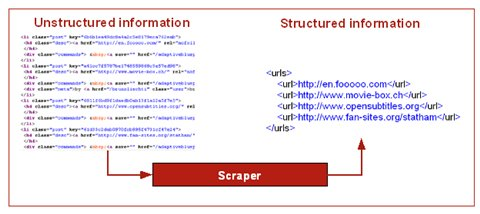
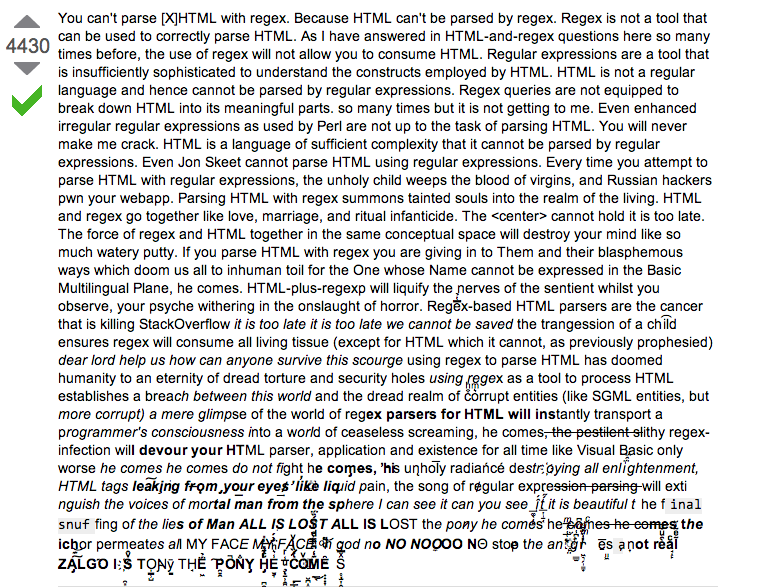
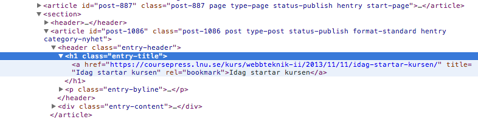

Big Data
Stora, komplexa datamängder
Svårhanterade för traditionella databashanterare
Utmaningen består i att samla, lagra, analysera och visualisera denna mängd med data
Möjlighet att få nya insikter i stora mängder datamaterial
Social Media Data, User Activity...Data is the new oil!
noSQL, Apache Hadoop, Mapreduce
Foto cc by Cory Doctorow: http://www.flickr.com/photos/doctorow/

I och med att allt mer information genereras och publiceras på webben skapar det mer och mer uppmärksamhet kring denna data. Vilka möjligheter det finns att analysera och bearbeta denna data. Företagen är såklart intresserade av vad som sägs på social media, anpassade annonser o.s.v. Vad händer om data läcker?

Web mining
Data mining handlar om att anlysera och hitta mönster i stora datasamlingar.
- Web usage mining - Anlysera data från surfanvändares beteenden, loggar aktiviteter (clickstream data)
- Web content mining - Data som redan finns på webben, innehåll i webbsidor, sökmotorer - crawlers, Strukturera ostrukturerad data
- Web-structure mining - Analyserar länkstruktur för att klassificera webbsidor. PageRank, Analysera sociala nätverk.
Foto from wikipedia: http://upload.wikimedia.org/wikipedia/commons/b/b8/Sao_Paulo_Stock_Exchange.jpg

Webbskrapning
- Samlar ostrukturerad information och strukturerar upp det för lagring och/eller analys
- 
- Spindlar/crawlers - Indexering

Foto cc by Espen Klem: http://www.flickr.com/photos/eklem/
Copy & paste
Foto cc by Esther Vargas: http://www.flickr.com/photos/esthervargasc/

Problem vid webbskrapning
- Skriva kod som gör HTTP-anrop
- Ta hand om resultatet och extrahera ut data
- Automatiskt följa länkar
- Skicka med POST-data
- Hantera sessioner
- Hantera redirections och fel (301, 404, 500)
- Tänk på webbplatsägaren!
Text, reguljära uttryck, grep

Screendump from: http://stackoverflow.com/questions/1732348/regex-match-open-tags-except-xhtml-self-contained-tags/1732454#1732454
DOM parsing
Sättet som webbläsare behandlar HTML, XML och XHTML

DOM Parsing - Exempel
<?php
$dom = new DOMDocument();
$b = $dom->loadHTML($data);
$x = new DOMXPath($dom);
// Plocka ut alla länkarna via ett XPath-uttryck
$items = $x->query('//div[@class="links"]/ul/li/a/@href');
foreach($items as $item) {
echo $item->nodeValue;
}
Det kommer finnas mer handfasta demonstrationsfilmer på kurshemsidan
Att tänka på...
- Är det OK att skrapa en webbsite?
- Fråga om lov!
- Identifiera dig!
Men ska det vara så krångligt?

Foto cc by Braden Kowitz: http://www.flickr.com/photos/kowitz/
From: api.github.com